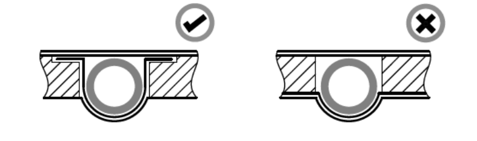
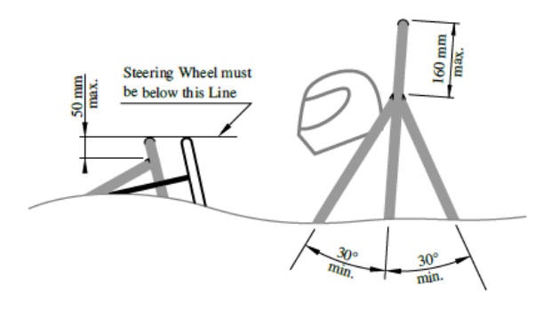
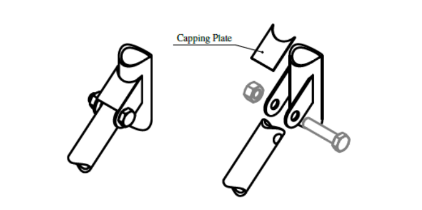
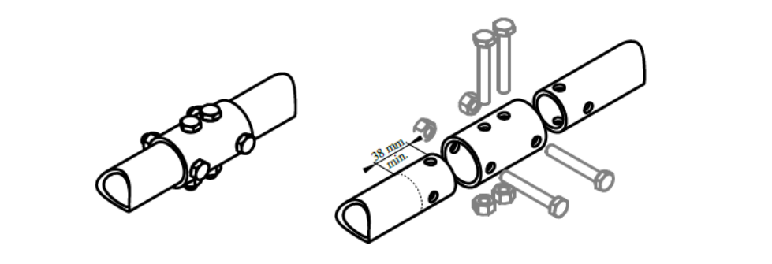
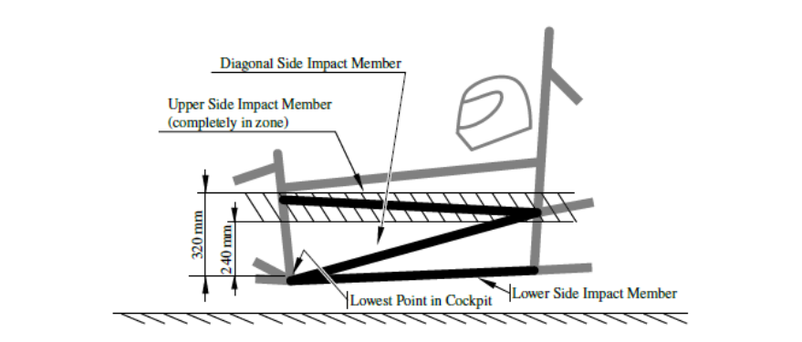
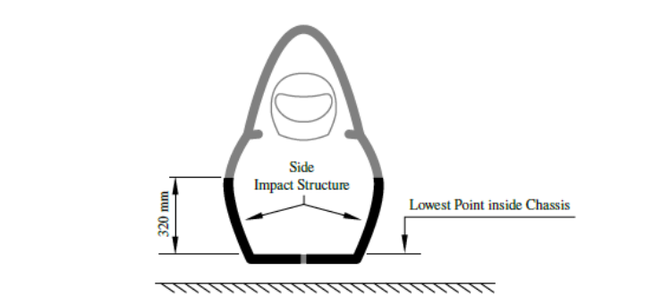
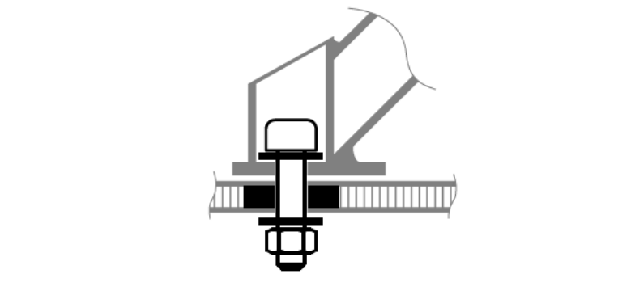

General Chassis Design¶
T3.1 General Requirements¶
T3.1.1¶
Among other requirements, the vehicle’s structure must include:
- Two Roll Hoops that are braced
- A Front Bulkhead with support system and Impact Attenuator (IA)
- Side Impact Structures
T3.2 Minimum Material Requirements¶
T3.2.1¶
Table 3 shows the minimum requirements for the members of the Primary Structure if made from steel tubing.
Table 3: Minimum Material Requirements¶
| Item or application | Minimum wall thickness | Minimum cross-sectional area | Minimum area moment of inertia |
|---|---|---|---|
| Main and front hoops, shoulder harness mounting bar | 2.0mm | 173mm² | 11320mm⁴ |
| Side impact structure, front bulkhead, roll hoop bracing, driver’s restraint harness attachment (except as noted above) | 1.2mm | 119 mm² | 8509 mm⁴ |
| Front bulkhead support, main hoop bracing supports | 1.2mm | 91 mm² | 6695 mm⁴ |
Minimum Material Requirements
T3.2.2¶
The Primary Structure of the car must be constructed of: - Round, mild or alloy steel (minimum 0.1% carbon) of the minimum dimensions specified in T3.2.1 - Approved ‘Alternative Materials’ as per T3.3. - Approved ‘Composite Structure’ as per T3.4.
T3.2.3¶
Except for inspection holes, any holes drilled in any part which is a member of the Primary Structure must be documented in the SES.
T3.2.4¶
The steel properties used for the calculations in the SES must be the lower of either the material datasheet properties or:
Non-welded strength for continuous material calculations:
i. Young’s Modulus (E) = 200 GPa ii. Yield Strength (Sy) = 305 MPa iii. Ultimate Strength (Su) = 365 MPa
Welded strength for discontinuous material such as joint calculations:
i. Yield Strength (Sy) = 180 MPa ii. Ultimate Strength (Su) = 300 MPa
T3.2.5¶
Any tubing with a wall thickness less than 1.2mm or a minimum area moment of inertia less than 6695 mm4 is considered non-structural and will be ignored when assessing compliance to any rule regarding the vehicle structure.
T3.2.6¶
If a member of the Primary Structure (except for the roll hoops) is a bent tube or made from multiple tubes an additional tube must support it. This support tube must:
- Have its attachment point at the position along the bend tube where it deviates farthest from a straight line connecting both ends.
- Be of the same dimension as the supported tube(s).
- Terminate at a node of the chassis.
- Be angled no more than 30° from the plane of the supported tube(s).
T3.2.7¶
Any welded seams shape must not be mechanically altered in any way.
T3.2.8¶
Where bonded joints are applicable and governed by the rules, a 50% reduction shall be applied to all datasheet adhesive values. Properties from adhesive tests must be derived from a statistically significant number of samples. Bonded joints in the Primary Structure must be documented in the SES.
T3.3 Alternative Materials¶
T3.3.1¶
Alternative materials may be used for all parts of the Primary Structure and the TSAC with the following exceptions:
- The main hoop and the main hoop bracing must be steel
- The front hoop must be metal
- Any welded structures of the Primary Structure must be steel
- However, the front hoop may be an aluminium welded structure
T3.3.2¶
If any materials other than steel tubing are used in the Primary Structure or the TSAC, physical testing is required to show equivalency to the minimum material properties for steel in T3.2.
T3.3.3¶
Fibre reinforced laminate composites are the only permitted non-metallic alternative material for safety-critical components, parts of the Primary Structure, the steering, brake and suspension systems.
T3.4 Composite Structures¶
T3.4.1¶
If composite structures are used in the Primary Structure or the TSAC, the Flexural Rigidity (EI) of that structure must be calculated with the tools and formulas in the SES. Any panel calculation must have the same composition as the structure used in the actual Primary Structure or TSAC.
The actual geometry and curvature of the panel may be taken into account for the main hoop bracing support, the front hoop bracing, the front bulkhead support structure and the shoulder harness bar, provided the flat panel EI equivalency is greater than 60% of the actual EI. For all other areas the EI must be calculated as the EI of a flat panel about its neutral axis.
T3.4.2¶
If composite materials are used in the Primary Structure or the TSAC the SES must include:
T3.4.3¶
For any laminate in the Primary Structure or the TSAC, the maximum weight content of parallel fibres, relative to the weight of all fibres in the laminate, is 50%. All fibres whose orientation fall within any 20° winder (+/-10°) count as parallel.
T3.4.4¶
If an asymmetrical lay-up is used in the Primary Structure, the thinner skin must have a thickness >= 40% of the thicker skin, or 1mm, whichever is less.
T3.4.5¶
Wherever backing plates are required, they must be fully supported by the structure they are attached to.
T3.4.6¶
Unidirectional fibres are not permitted in the outermost layer of any Primary Structure laminate.
T3.5 Laminate Testing¶
T3.5.1¶
If composite materials are used for any part of the Primary Structure or the TSAC the team must:
- Build a representative test panel which must measure exactly 275mm × 500mm that has the same design, laminate and fabrication method as used for the respective part of the Primary Structure represented as a flat panel. The sides of the test panel must not be laminated (core material must be visible).
- Perform a 3-point bending test on this panel
- The data from these tests and pictures of the test samples and test setup must be included in the SES. In the pictures, the following must be identifiable: distance between the two supports, dimensions of the load applicator and test sample marking as per T3.5.6. The test results must be used to derive strength and stiffness properties used in the SES formula for all laminate panels.
- Where a TSAC panel core thickness is <=5mm, it is permitted to use a smaller 150mm x 275mm test panel. The distance between the test panel supports must be >=200mm and the load applicator must have a radius >=5mm.
T3.5.2¶
If a panel represents side impact structure it must be proven that it has at least the same properties as two steel tubes meeting the requirements for side impact structure tubes for buckling modulus, yield strength and absorbed energy.
T3.5.3¶
A baseline 3-point bending test, performed with steel tube(s), must demonstrate a minimum rig compliance of 85% and be documented in the SES.
T3.5.4¶
Composite structures with different core thicknesses but otherwise identical construction may use material properties derived from a single test panel, except for the Front Bulkhead and Side Impact Structure. The panel with the thicker core must be tested and the structure using derived material properties may not use a core thickness of less than 67 % of the tested panel.
T3.5.5¶
When a laminate is not quasi-isotropic i.e. the strength and stiffness is not equal in all directions, the results from the 3-point bending test must be assigned to the 0o lay-up direction and the properties oriented according to the chassis in the SES.
T3.5.6¶
The test samples must be presented at technical inspection. All samples must be marked with the laminated structure acronym and date of testing, using permanent marker, engraving or laser etching.
T3.5.7¶
The distance between the two test panel supports must be at least 400 mm.
T3.5.8¶
The load applicator used to test any panel or tube must be metallic and have a radius of 50mm, other than deviations allowed under T.3.5.1.
T3.5.9¶
The load applicator must overhang the test piece to prevent edge loading.
T3.5.10¶
There must be no material between the load applicator and the test piece.
T3.5.11¶
Perimeter shear tests must be completed which measure the force required to push or pull a 25 mm diameter flat punch through a flat laminate sample.
The sample must be at least 100mm × 100mm. Core and skin thicknesses must be identical to those used in the actual chassis structure and be manufactured using the same materials and processes.
Where an asymmetrical lay-up is used, the thinner skin must face the punch.
T3.5.12¶
The test fixture must support the entire sample, except for a 32mm hole aligned co-axially with the punch. The sample must not be clamped to the fixture.
T3.6 Structural Documentation¶
T3.6.1¶
All teams must submit a Structural Equivalency Spreadsheet (SES).
T3.6.2¶
The SES spreadsheet form can be downloaded from the competition website.
T3.6.3¶
SE3D submission is not required for Formula Student UK.
T3.6.4¶
Vehicles must be fabricated in accordance with the materials and processes described in the SES.
T3.6.5¶
Teams must bring a copy of the approved SES to technical inspection.
T3.6.6¶
As part of the SES submission, teams will be required to provide evidence of a new chassis via a written comparison describing the physical differences between the submitted Primary Structure design with that of the most recent previous.
SES demonstrating minimal change in design between their old and new chassis will be passed to the Design Judges for consideration of penalty points under Rule S5.7.2.
Photographic evidence demonstrating a ‘new chassis’ will be required for Chassis Scrutineering as per Rule IN5.1.1.
Teams who fail to satisfy Rule A2.2 will be disqualified from the competition.
T3.6.7¶
Reports submitted on time, but which do not contain the required information (e.g. a “placeholder report” submitted to avoid penalties but without the required data) will be treated as a non-submission.
T3.6.8¶
SES submission will be graded based on the completeness and quality of information provided in SES. It will not be an appraisal of the quality of design. Grades will range from A to F based on the following definitions:
A. Completed to a high standard with clear graphics, notes and engineering justification.
B. Completed to a good standard with clear graphics and notes.
C. Completed to a minimum acceptable standard.
D. Notes and graphics difficult to read and/or poorly presented.
E. Repeat of the same errors for the same or similar design as in a previous year’s original submission.
F. Late submission, incorrect SES template or major sections missing such that SES is deemed a 'non-submission’.
Grades will be published online and shared with Design Judges. No points will be awarded for grades A-E. An F grade will carry 10 to 50 penalty points.
T3.7 Roll Hoops¶
T3.7.1¶
Both roll hoops must be securely integrated to the Primary Structure using node-to-node triangulation or equivalent joining methods.
T3.7.2¶
The minimum radius of any bend, measured at the tube centreline, must be at least three times the tube outside diameter. Bends must be smooth and continuous with no evidence of crimping or wall failure.
T3.7.3¶
In a plane perpendicular to the longitudinal axis of the vehicle and through the lower endpoints of the roll hoop, no part of the Primary Structure may lie below 30mm of the endpoints of the roll hoop.
T3.7.4¶
Roll hoops attached to a composite Primary Structure must be mechanically attached at the top and bottom of both sides of that structure and at intermediate locations if needed to show equivalency. The front hoop requires a minimum of six attachment points. The lower roll hoop tubing attachment points must be within 50mm of the endpoints of the roll hoop.
T3.7.5¶
Mounting plates welded to the roll hoops must be at least 2mm thick steel or 3 mm thick aluminium, dependent of the roll hoop material.
T3.7.6¶
Both roll hoops must have one 4.5 mm inspection hole in a non-critical straight location and its surface at this point must be unobstructed for at least 180°.
T3.8 Main Hoop¶
T3.8.1¶
The main hoop must be constructed of a single piece of uncut, continuous, closed section steel tubing.
T3.8.2¶
In side view the portion of the main hoop which is above its upper attachment point to the side impact structure must be inclined less than 10° from vertical.
T3.8.3¶
In side view any bends in the main hoop above its upper attachment point to the Primary Structure must be braced to a node of the main hoop bracing support structure with tubing meeting the requirements of main hoop bracing.
T3.8.4¶
In side view any portion lower than the upper attachment point to the side impact structure must be inclined either forward or less than 10° rearward.
T3.9 Front Hoop¶
T3.9.1¶
The front hoop must be constructed of a continuous and closed section.
T3.9.2¶
If the front hoop is made from more than one piece, it must be supported by node-to-node triangulation or an equivalent construction.
T3.9.3¶
In side view, no part of the front hoop can be inclined more than 20° from vertical.
T3.9.4¶
If the front hoop is a welded construction made from multiple aluminium profiles, the equivalent yield strength must be considered in the as-welded condition unless the team demonstrates and shows proof that it has been properly solution heat treated and artificially aged. The team must supply sufficient documentation proving the appropriate heat treatment process was performed.
T3.9.5¶
Fully laminating the front hoop to the monocoque is acceptable. Fully laminating means that the hoop must be encapsulated with laminate around its whole circumference, see Figure 5. Equivalence to T3.7.4 must be shown in the SES. The laminate encapsulating the front hoop must overlap by at least 25mm on each side. It must have the same lay-up as the laminate that it is connecting to.

Figure 5: Front hoop laminating requirementsT3.10 Main Hoop Bracing¶
T3.10.1¶
The main hoop must be supported to the front or the rear by bracing tubes on each side of the main hoop.
T3.10.2¶
In side view the main hoop and the main hoop braces must not lie on the same side of a vertical line coincident with the top of the main hoop.
T3.10.3¶
The main hoop braces must be attached to the main hoop no lower than 160mm below the top-most surface of the main hoop. The included angle formed by the main hoop and the main hoop braces must be at least 30°.
T3.10.4¶
The main hoop braces must be straight.
T3.10.5¶
The lower ends of the main hoop braces must be supported back to the upper attachment point of the main hoop to the side impact structure and to the lower attachment point of the main hoop to the side impact structure by a node-to-node triangulated structure or equivalent composite structure.
T3.10.6¶
If any item which extends outside of the Primary Structure is attached to the main hoop braces, additional bracing is required to prevent bending loads in a rollover situation.
T3.11 Front Hoop Bracing¶
T3.11.1¶
The front hoop bracing attaches on each side of the front hoop as well as the structure forward of the driver’s feet. A minimum of two tubes without any bends must be straight on a line in side view of the frame and must have a minimum distance of 100 mm between each other at the front hoop.
T3.11.2¶
The front hoop bracing structure must be attached no lower than 50mm below the top- most surface of the front hoop, see Figure 6.

Figure 6: Front hoop bracing, main hoop bracing and steering wheel requirements
T3.11.3¶
If the front hoop is inclined more than 10° to the rear, additional braces extending rearwards are required.
T3.11.4¶
Composite front hoop bracing structures and their attachments cannot be counted towards the front bulkhead support structures and vice-versa for the structural equivalency documentation.
T3.11.5¶
Cutouts in any composite Front Hoop Bracing or Front Bulkhead Support must not exceed 625cm2.
T3.12 Mechanically Attached Roll Hoop Bracing¶
T3.12.1¶
Any non-welded joint at either end of a bracing must be either a double-lug joint, see Figure 7, or a sleeved joint, see Figure 8. Spherical rod ends are prohibited.

Figure 7: Double lug joint

Figure 8: Sleeved joint
T3.12.2¶
If threaded fasteners are used, they are considered critical fasteners and must comply with T10.1.
T3.12.3¶
Double lug-joints must include a capping arrangement, see Figure 7.
T3.12.4¶
In a double lug joint each lug must be at least 4.5mm thick and the pin or bolt must be 10mm metric grade 8.8 minimum. The attachment holes in the lugs and in the attached bracing must be a close fit with the pin or bolt.
T3.12.5¶
For sleeved joints the sleeve must have a minimum length of 38mm either side of the joint and be a close-fit around the base tubes. The wall thickness of the sleeve must be at least that of the bracing tubes. The bolts must be 6mm metric grade 8.8 minimum. The holes in the sleeves and tubes must be a close-fit with the bolts.
T3.13 Front Bulkhead¶
T3.13.1¶
Any alternative material used for the front bulkhead must have a perimeter shear strength equivalent to a 1.5mm thick steel plate.
T3.13.2¶
If the front bulkhead is part of a composite structure and is modelled as an “L” shape, the EI of the front bulkhead about the vertical and lateral axes must be equivalent to a steel tube meeting the requirements for the front bulkhead. The length of the section perpendicular to the bulkhead may be a maximum of 25mm measured from the rearmost face of the bulkhead.
T3.13.3¶
In front view the driver’s feet must be within the outside perimeter of the Front Bulkhead.
T3.14 Front Bulkhead Support¶
T3.14.1¶
The front bulkhead must be supported back to the front hoop by a minimum of three tubes on each side; an upper member, a lower member and diagonal bracing to provide triangulation.
- The upper support member must be attached a maximum of 50mm below the top-most surface of the front bulkhead and a maximum of 50mm below to 100mm above the intersection of the front hoop and upper side impact member.
If the attachment point of the upper support member is greater than 100mm above the upper side impact member, node-to-node triangulated bracing is required to transfer load to the main hoop.
- The lower support member must be attached to the base of the front bulkhead and the base of the front hoop.
- The diagonal bracing must triangulate the upper and lower support members node-to- node.
T3.14.2¶
If the front bulkhead support is part of a composite structure, it must have equivalent EI to the sum of the EI of the six baseline steel tubes that it replaces.
T3.14.3¶
The EI of the vertical side of the front bulkhead support structure must be equivalent to at least the EI of one baseline steel tube that it replaces.
T3.14.4¶
The perimeter shear strength of the monocoque laminate in the front bulkhead support structure must be at least 4kN.
T3.15 Impact Structures¶
T3.15.1¶
The Side Impact Structure must consist of at least three steel tubes, see T3.2, on each side of the cockpit, see Figure 9.
- The upper member must connect the main hoop and the front hoop. It must be at a height between 240mm and 320mm above the lowest point inside the chassis between the front and main hoop.
- The lower member must connect the bottom of the main hoop and the bottom of the front hoop.
- The diagonal member must triangulate the upper and lower member between the roll hoops node-to-node.

Figure 9: Side impact structureT3.15.2¶
Other impact structures, see CV1.3.2, EV4.4.2 and EV5.5.2, must be:
Fully triangulated structures.
Consist of at least three steel tubes, see T3.2, on each side and rearward of the component(s) requiring protection.
If the component projects outwards to the side of the roll hoops, the front of the component must also be protected.
The upper member must not be higher than 320mm above the lowest point inside the chassis between the front and main hoops.
T3.15.3¶
No part of the TS may be within 25mm of the rearmost impact structure of the vehicle (non-structural cooling ducts are excluded from this requirement).
T3.15.4¶
If the impact structure is part of a composite structure, the following is required:
- The region of the structure up to a height of 320mm above the lowest point inside the chassis between the front and main hoops must have an EI equal to the three baseline steel tubes that it replaces, see Figure 10.
- The vertical side impact structure must have an EI equivalent to two baseline steel tubes and half the horizontal floor must have an EI equivalent to one baseline steel tube.
The vertical side impact structure must have an absorbed energy equivalent to two baseline steel tubes, exceeding 65J.
The perimeter shear strength must be at least 7.5kN.

Figure 10: Monocoque Side Impact StructureT3.16 Bolted Primary Structure Attachments¶
T3.16.1¶
If two parts of the Primary Structure are bolted together, each attachment point between the two parts must be able to carry a load of 30kN in any direction.
T3.16.2¶
Data obtained from the laminate perimeter shear strength test must be used to prove that adequate shear area is provided.
T3.16.3¶
Each attachment point requires a minimum of two 8mm metric grade 8.8 bolts and steel backing plates with a minimum thickness of 2mm.
T3.16.4¶
For the attachment of front hoop bracing, main hoop bracing, and main hoop bracing support to the Primary Structure, the use of one 10mm metric grade 8.8 bolt is sufficient, if the bolt is on the centreline of the tube, see Figure 11.

Figure 11: Bolted roll hoop bracing supportT3.16.5¶
When using bolted joints within the Primary Structure, no crushing of the laminate core material is permitted.
T3.16.6¶
For bolted AIP to Front Bulkhead attachments, and if two or more panels or plates in the Primary Structure are bolted together, a minimum of one 8 mm metric grade 8.8 bolt must be used for each 200 mm increment of reference perimeter.
- The bolts must be evenly spaced around the circumference.
- Smaller bolts may be used if equivalency is proven and the number of bolts is increased accordingly.
- The reference perimeter is the outside edge of the flange at the connection between the AIP and front bulkhead or the two panels/plates.
- The bolts are considered critical fasteners, must comply with T10 and require steel backing plates with a minimum thickness of 2mm.
T3.16.7¶
Where blind inserts are used for attachments per T3.16.6, physical tests that prove the attachment can withstand >=15kN must be completed and documented in the SES.
T3.17 Impact Attenuator¶
T3.17.1¶
Each vehicle must be equipped with an IA Assembly, consisting of an Impact Attenuator (IA) and Anti-Intrusion Plate (AIP).
T3.17.2¶
The IA must be:
- Installed forward of the front bulkhead,
- At least 100mm high and 200mm wide for a minimum distance of 200mm forward of the front bulkhead,
- No portion of the front face of the IA can be positioned more than 350 mm above the ground,
- Not able to penetrate the front bulkhead in the event of an impact,
- Attached securely and directly to the AIP, by welding or a minimum of four (4) 8mm metric grade 8.8 bolts. The bolts are considered critical fasteners and must comply with T10.1,
- Not part of the non-structural bodywork,
- Designed with a closed front section,
- No wider or higher than the AIP.
T3.17.3¶
The AIP must be 1.5mm solid steel, 4.0mm solid aluminium or permitted alternative (T3.17.5).
- If the AIP is bolted to the front bulkhead, it must be the same size as the outside dimensions of the front bulkhead and comply with T3.16.6,
- If it is welded to the front bulkhead, it must extend at least to the centreline of the front bulkhead tubing in all directions,
- The AIP must not extend past the outside edges of the front bulkhead.
T3.17.4¶
Alternative methods of attaching the IA to the AIP are permissible if equivalency to four (4) 8mm metric grade 8.8 bolts is proven.
T3.17.5¶
Alternative AIP designs are permissible if equivalency to T3.17.3 is proven by physical testing as per T3.19.
T3.17.6¶
The attachment of the IA and AIP must be designed to provide an adequate load path for transverse and vertical loads in the event of off-centre and off-axis impacts. Segmented foam attenuators must have the segments bonded together to prevent sliding or parallelogramming.
T3.17.7¶
The attachment of the IA and/or AIP to a monocoque structure must comply with T3.16.6 and requires an approved SES, as per T3.6.
T3.17.8¶
If a team uses a standard FSAE IA and the front bulkhead width is greater than 400mm and/or its height is greater than 350mm, a diagonal or X-bracing made from 25mm × 1.5mm steel tubing, or an approved equivalent per T3.2, must be included in the front bulkhead.
T3.17.9¶
If the standard IA is the honeycomb type: - The IA material must be pre-crushed type - Adhesive used to mount the IA to the AIP must have a shear strength of at least 24 MPa
T3.17.10¶
If a standard IA is used but does not comply with the requirements of T3.17.8, physical testing must be carried out to prove that the AIP does not permanently deflect more than 25 mm.
T3.18 Impact Attenuator Data Requirement¶
T3.18.1¶
All teams must submit an IA Data report using the Impact Attenuator Data (IAD) template provided on the Formula Student website.
- If a report does not use this template, it will automatically incur a 10-point design penalty,
- Templates from other Formula Student/FSAE competitions are not acceptable. The report will still be assessed to ensure that the IA meets the rules requirements and to allow the team to compete,
- Minor violations in report layout will be dealt with via the downgrading process outlined in Rule T3.18.5.
T3.18.2¶
Reports submitted late will incur lateness penalties as described in the Key Dates document published on the Formula Student website. However, these reports will still be assessed to ensure that the IA meets the rules requirements and to allow the team to compete.
T3.18.3¶
Reports submitted on time, but which do not contain the required information (e.g. a “placeholder report” submitted to avoid penalties but without the required test data) will be treated as a non-submission and dealt with according to Rule T3.18.2.
T3.18.4¶
Reports will be assessed by a team of judges using a common approach. A selection of reports will be moderated by the Lead IAD Judge to ensure consistency.
T3.18.5¶
Reports will be assessed according to the following process, in order to grade them from A to F:
- Reports are initially assigned a grade according to the type of testing carried out. Dynamic tests are initially assigned a ‘B’ grade; Quasi-static (crush) tests a ‘C’ grade; and teams using a Standard IA an ‘E’ grade.
- The report is then assessed to ensure that the IA meets the rules requirements for energy absorption, deceleration levels, dimensions, mounting arrangements etc. Impact Attenuators which do not meet these requirements will automatically incur a 10-point penalty, and the team will be contacted by the Judges to determine appropriate modifications or re-design to allow them to compete.
- If the IA design meets the rules, the report will then be assessed for quality. Minor items of missing information or poor explanation or presentation may lead to the report being downgraded by up to two grades. Teams will be contacted and asked to supply missing information, but the downgrade will remain. A high-quality report may be upgraded by up to two grades.
- IA reports for a standard FSAE IA may be upgraded by up to two grades if they include additional analysis or testing – for example finite element simulation or testing of material samples.
T3.18.6¶
Once the report has been graded, the grade will be converted into design penalty points as follows:
- A = 0 points; B = 0 points; C = 1 point; D = 4 points; E = 8 points; F = 10 points.
- These penalties will be forwarded to the Head Design Judge for inclusion in the overall design score.
T3.19 Impact Attenuator Test Requirements¶
T3.19.1¶
The IA assembly, when mounted on the front of a vehicle with a total mass of 300 kg and impacting a solid, non-yielding impact barrier with a velocity of impact of 7 m/s, must meet the following requirements:
- Decelerate the vehicle at a rate not exceeding 20g average and 40g peak,
- The energy absorbed in this event must meet or exceed 7350 J,
- Teams using the standard IA are not required to submit test data with their IAD report, but all other requirements must be included.
T3.19.2¶
During the IA test:
- The IA must be attached to the AIP using the intended vehicle attachment method,
- The IA assembly must be attached to a test fixture that has geometry, stiffness and strength equal to or greater than the intended chassis. When alternative materials are used for the AIP, the test fixture must be a copy of the intended chassis (i.e. materials, lay-up, joining methods),
- There must be at least 50mm clearance rearwards of the AIP to the test fixture,
- No part of the AIP may permanently deflect more than 25mm beyond the position of the AIP before the test.
- The test fixture must not show any signs of failure (e.g. yielding, cracks) after the test.
T3.19.3¶
Teams using IAs (typically structural noses) directly attached to the front bulkhead, which shortcut the load path through the bulk of the AIP, must conduct an additional test. This test must prove that the AIP can withstand a load of 120kN (300kg multiplied by 40g), where the load applicator matches the minimum IA dimensions.
T3.19.4¶
Vehicles with aerodynamic devices and/or sensors in front of the AIP must not exceed the peak deceleration of T3.19.1 for the combination of their IA assembly and the non- crushable object(s). Any of the following three methods may be used to prove the design does not exceed 120kN:
- Physical testing of the IA assembly including any attached non-crushable object(s), or structurally representative dummies, in front of the AIP,
- Combining the peak force from physical testing of the IA assembly with the failure load for the mounting of the non-crushable object(s), calculated from fastener shear and/or link buckling,
- Combining the “standard” IA peak load of 95kN with the failure load for the mounting of the non-crushable object(s), calculated from fastener shear and/or link buckling.
T3.19.5¶
Dynamic testing (sled, pendulum, drop tower, etc) of the IA may only be conducted at a dedicated test facility. This facility may be part of the university but must be supervised by professional staff. Teams are not allowed to design their own dynamic test apparatus.
T3.19.6¶
When using acceleration data from the dynamic test, the average deceleration must be calculated based on the raw unfiltered data. If peaks above the 40g limit are present in the data, a 100 Hz, 3rd order, low pass Butterworth (−3 dB at 100Hz) filter may be applied.
T3.20 Non-Crushable Objects¶
T3.20.1¶
All non-crushable objects (e.g. pedals, master cylinders, hydraulic reservoirs) must be rearward of the rear most plane of the front bulkhead and at least 25mm behind the AIP at any time, except for sensors, aerodynamic devices and their mountings.
T3.20.2¶
All mountings for sensors and aerodynamic devices must attach to the chassis rearwards of the AIP. Tabs/brackets must not extend more than 25 mm forward of the AIP. During frontal impact, all non-crushable objects must be able to move fully reearwards of the AIP.